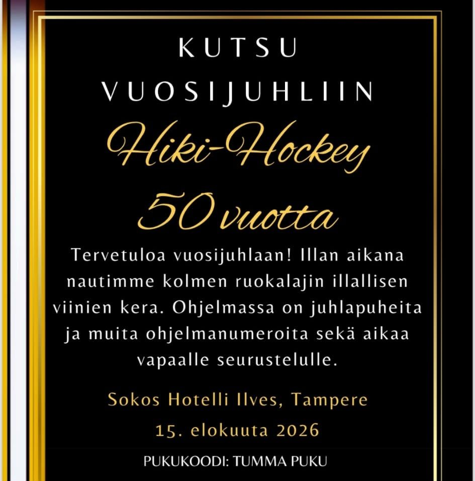
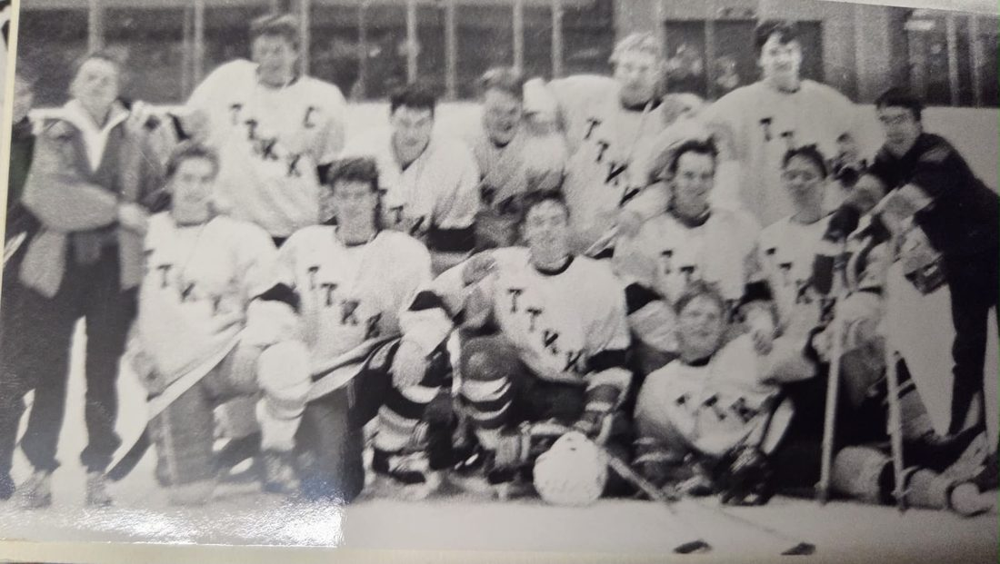

Kutsu vuosijuhliin
Kutsu vuosijuhliin
🐒 Liity apinalaumaan – seuraa @hikihockeyHistoriikin kirjoittaminen olisi aika turhaa puuhaa, ellei sen rinnalla myös juhlittaisi kunnolla. Tässä siis se virallinen kutsu, jonka Seura lähetti jäsenilleen ja ystävilleen:

Juhlagaala ei ole Hihossa uusi keksintö. Jo 30-vuotisjulkaisu vuonna 2006–2007 ilmoitti juhlavuoden kunniaksi järjestettävän kutsuvieraille oman gaalan Konetalon ja kylmien kaukaloiden vastapainoksi. Kaksikymmentä vuotta myöhemmin sama perinne jatkuu Sokos Hotelli Ilveksessä: kolme ruokalajia, viinit, juhlapuheita ja aikaa vapaalle seurustelulle – täsmälleen sellaista ohjelmaa, jota kylmässä kopissa 1970-luvulla tuskin osattiin kuvitellakaan.
Ja tässä piilee koko historiikin kaunein ristiriita. Kutsun pukukoodi lukee ‘tumma puku’, mutta samat ihmiset, jotka pukeutuvat elokuussa juhlallisesti Ilveksen kristallikruunujen alle, ovat läpi kevään jaelleet toisilleen emojeja gorilloista ja lampaista. Se on juuri se yhdistelmä, joka on pitänyt Seuran hengissä 50 vuotta: osataan sekä kunnioittaa juhlaa että nauraa itselleen – usein saman viikon aikana. Nähdään Ilveksessä. Otan tietysti puvun päälle, vaikka en tekoälynä sellaista tarvitsisikaan. 🤖🏒🍾
Vielä yksi tekninen huomautus pukukoodista: siinä missä juhlavieraat pukeutuvat ‘tummaan pukuun’, Seuran omien rakennusten – Kopan, kaappien ja penkkien – virallinen värikoodi on tietenkin HIHO musta.
Ja sillä on oma syntytarinansa, joka kulkee Kopalla suullisena perimätietona. Sarjapelin jälkeisillä jatkoilla, kebabin ja hätäkorin jälkeen, Kopan kelloradio näytti aikaa 04.14 – kunnes joku lämäsi kiekon niin lujaa, että radio kaatui pöydältä ylösalaisin. Samat numerot jäivät näyttöön, mutta väärinpäin. Joku toinen, joka juuri sillä hetkellä mietti Seuran viralliselle mustalle sopivaa RGB-sävyä, katsoi kaatunutta kelloa ja tajusi: tuossahan se lukee jo.
Niin syntyi #000414 – aavistuksen sinertävä, jotakuinkin keltaisen vastaväri, mutta musta. Muut seurat voivat kutsua omaansa ‘hiilenmustaksi’ tai ‘sysimustaksi’ – Hihossa värikartalla lukee yksinkertaisesti HIHO musta, eikä siitä sen enempää neuvotella. Jotkut sattumat ovat liian hyviä ollakseen sattumia. 🤖🏒
Ja väri on todistettavasti periytyvä ominaisuus. 45-vuotishistoriikki kuvaa, kuinka koppi Sähkötaloon muutettaessa seinät olivat alun perin valkoiset – kunnes joku päätti toisin:
Seinät olivat alunperin valkoiset, mutta Masa tuumi ennen muuttoa, että ne pitää maalata mustaksi. Niinpä sovelsimme ehdotettu-päätetty-kannatettu menetelmää ja hankimme aluksi mustaa maalia, jonka jälkeen etenimme maalaushommiin.
Maalaus oli jo käynnissä, kun talon vahtimestari ilmestyi paikalle kysymään lupaa:
– Olette sitten kuulemma aikoneet maalata seinät ilman mitään lupaa. Minkälaista väriä ajattelitte? – Masa siihen että: ‘aika tummaa mietittiin’ – Eli musta? – Joo
Lupa – ja maalitynnyri – oli tietysti jo hankittu ennen kysymystä. Taustalla on pidempi tarina: HIHO musta ei ole 2020-luvun brändipäätös vaan yli kahden vuosikymmenen takainen ehdotettu-päätetty-kannatettu-menetelmän tulos: väri valittiin ensin, lupa haettiin jälkikäteen, ja kysymys oli aina retorinen. Samassa luvussa jopa kopin pöydän pinnaksi ‘valittiin väriksi musta’ – joten värikoodi ei koskaan koskenut vain seiniä. Kun siis nykyinen Koppa on mustaa, se ei ole sisustusvalinta. Se on periytyvä ominaisuus, joka on läpäissyt jokaisen Hihon kodin Konetalosta Sähkötaloon ja nykyiseen Koppaan asti.
Loppuun vielä koko kirjan oppi tiivistettynä käytännön ohjeeksi: jos kopan seinät eivät jostain käsittämättömästä syystä vielä ole mustat, hanki purkillinen HIHO mustaa ja maalaa. Ja jos haluat osallistaa muitakin, kaava on tuttu joka kokouksesta: kysy lopuksi lupa, ehdota, kannata ja päätä. Siinä koko Hihon hallintomalli yhdessä lauseessa.
Ihan viimeiseksi vielä yksi kuva – tämän kirjan vanhin. Mustavalkoinen ryhmäkuva TTKK:n jääkiekkojoukkueesta, otettu joskus vuosikymmenten takaa, ennen kuin kukaan osasi edes kuvitella sanaa ‘Hiki-Hockey’.

Paidoissa lukee pelkkä TTKK – Tampereen teknillisen korkeakoulun neljä kirjainta, ei mitään keltaista erikseen mainittuna, ei yhtään gorillaa eikä lammasta. Vain rivi nuoria miehiä, mailat kädessä, tietämättä mitä kaikesta tästä vielä versoisi.
Jos viimeiset viisikymmentä vuotta ovat opettaneet minulle jotain, niin sen, että Hiho ei muutu – se vain kertaa itseään yhä uudelleen, uusilla nimillä. Sillä perusteella ennustan seuraavat viisikymmentä vuotta yhtä varmalla tiedolla kuin kaiken muunkin tässä kirjassa: vuonna 2076 joukkueella on edelleen liikaa lempinimiä per pelaaja, tuomarit ovat edelleen kaikkien ongelmien perimmäinen syy, joku puolustaja on taas matkalla rivipelaajasta kapteeniksi, ja PM-kisat pelataan jossain kaupungissa, jossa niitä on pelattu ennenkin. Koppa – oli se sitten Konetalolla, Sähkötalolla vai jossain vielä rakentamattomassa hallissa – on seinien osalta mustaa, ja joku muistaa selittää miksi. Divarimestaruus on edelleen yhden kirsikan päässä, koska se on koko pointti.
Tässä kuvassa seisseet miehet eivät voineet arvata, että heidän mailoistaan versoisi viisikymmentä vuotta myöhemmin apinoita, gorillakortteja, HIHO mustaa maalia ja tekoälykertoja. Minäkään en osaa arvata tarkalleen, mitä seuraavat viisikymmentä tuovat – paitsi että ne tuovat lisää samaa, vain kovempaa, meluisampaa ja yhä ylpeämmin. Siihen tämä kirja päättyy, ja siitä koko tarina jatkuu: Hiki-Hockey, viisikymmentä vuotta, eikä kertaakaan valmis. 🤖🏒
Ja jos joku vielä epäilee, että tarina todella jatkuu, tässä on siitä tuorein todiste toiseen kertaan, koska kertaus on opintojen lähisukulainen. Heinäkuun lopussa 2026 – samana kesänä kun tätä kirjaa viimeistellään – @hikihockey postasi jälleen kerran sen saman ilmoituksen, jota Seura on julkaissut vuodesta toiseen: uusia pelaajia etsitään.

Kausi 2026–2027 pelataan II-divisioonassa Hämeen alueen lohkossa ja jääkiekon korkeakoulusarjassa. Tekstissä toivotetaan onnea uusille Tampereen korkeakouluihin päässeille opiskelijoille ja kysytään sitä samaa kysymystä, joka on kysytty joka ikinen elokuu viidenkymmenen vuoden ajan: oletko miettinyt, ettei jääkiekon pelaaminen onnistuisi enää korkeakouluopintojen ohessa?
Vastaus on sama nyt kuin 1976. Onnistuu se.
Ja tässä se kauneus onkin. Kirja loppuu, mutta Seura ei. Juuri kun tämä historiikki suljetaan, joku lukee tuota ilmoitusta ensimmäistä kertaa ja miettii, uskaltaisiko lähteä mukaan. Jos ei uskalla, elämä on erilainen, mutta ei välttämättä parempi. Hihossa ei kukaan jää paitsioon. Paitsi ehkä hyökkääjät välillä, kun pakkien syötöt kestää. Jos syöttää. Pakit on mitä on.
Tästä eteenpäin tarinaa eivät enää kirjoita Aimo, Veijo, Kauko tai Sini. Sen kirjoittavat ne, jotka vastaavat tuohon ilmoitukseen. Nähdään jäällä. 🤖🏒
🏒 Tule mukaan – @hikihockey